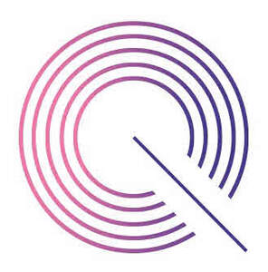

Trade Mark Journal No.2025/032 8 August 2025
UK00004240358 28 July 2025 (9,10,42,44)

- Class 9
- Scientific and medical apparatus and instruments, including downloadable software for processing, analysing, and visualising medical imaging data; Apparatus and instruments for recording, transmitting, reproducing or processing sound, images or data; Scientific research and laboratory apparatus, educational apparatus and simulators; Computer software for use in medical decision support systems; Computer software relating to the medical field; Imaging apparatus; Magnetic resonance imaging apparatus, not for medical purposes; Magnetic resonance imaging [MRI] apparatus, not for medical purposes; Imaging devices for scientific purposes; Electronic imaging devices; Diagnostic instruments for scientific purposes; Diagnostic instruments for scientific use; Diagnostic apparatus for scientific purposes; Diagnostic apparatus for scientific use; Diagnostic apparatus for research laboratory use; Diagnostic apparatus for research laboratory purposes; Artificial intelligence software for diagnostic imaging and radiological analysis; Digital image processing apparatus; Software for brain wave frequency analysis; Data processing software for neuroimaging and functional brain mapping; parts and fittings for all the aforesaid goods.
- Class 10
- Surgical and medical apparatus and instruments, namely medical diagnostic imaging apparatus; Radiology screens for medical purposes; Diagnostic tools for medical purposes; Diagnostic tools for medical use; MRI diagnostic apparatus; Medical diagnostic apparatus; Medical diagnostic testing apparatus; Diagnostic apparatus for medical use; Diagnostic imaging apparatus for medical use; Testing instruments for medical diagnostic purposes; Magnetic resonance imaging (MRI) diagnostic apparatus; Diagnostic imaging apparatus for medical purposes; Laboratory apparatus for medical diagnostic purposes; Medical diagnostic apparatus for use in analytical tests; Diagnostic apparatus for medical purposes used in medical laboratories; Apparatus for carrying out diagnostic tests for medical purposes; MRI scanners; MRI apparatus for medical purposes; Magnetic resonance imaging [MRI] scanners; Magnetic resonance imaging [MRI] apparatus for medical purposes; Medical imaging apparatus; Imaging apparatus for medical purposes; Imaging apparatus for medical use; apparatus for analysing brain wave frequencies; interventional radiology equipment; medical devices for neuroimaging and functional brain analysis; parts and fittings for all the aforesaid goods.
- Class 42
- Scientific and technological services and research, including the design and development of computer software for medical imaging and diagnostics; Design and development of computer hardware and software; Science and technology services; software engineering services in the fields of radiology and neuroscience; scientific research in interventional radiology and brain imaging; development of artificial intelligence algorithms for medical diagnostics and image interpretation; technical consultancy relating to medical imaging software and cloud-based data analysis platforms; Clinical research in the field of radiology; Research in the field of interventional radiology; Clinical trials; Clinical research; Conducting clinical tests; Conducting clinical studies; Clinical research services; Conducting clinical trials; Biological, clinical and medical research; Conducting clinical trials for others [scientific research]; Biological research, clinical research and medical research; Medical and scientific research, namely, conducting clinical trials for others; Providing information in the field of clinical research via a website; Providing medical and scientific research information in the field of clinical trials; Providing a website featuring educational information in the field of clinical research; Development of diagnostic apparatus; Computer aided diagnostic testing services; Design and development of computer software; Design and development of computer software for use with medical technology; Scientific research; Scientific research for medical purposes; Scientific investigations for medical purposes; Medical research; Medical research services; Medical research laboratory services; information, advisory and consultancy services relating to the aforesaid.
- Class 44
- Medical services, including medical imaging services; Medical imaging services; Medical diagnostic services; Medical testing for diagnostic or treatment purposes; Medical analysis services for diagnostic and treatment purposes provided by medical laboratories; health assessments using MRI and neuroimaging technologies; diagnostic services in the fields of radiology and brain health; clinical services involving the analysis of brain wave frequencies and functional imaging; medical consultancy in the field of interventional radiology and preventive health screening; information, advisory and consultancy services relating to the aforesaid.
Quantified Imaging Limited
Representative: Stobbs